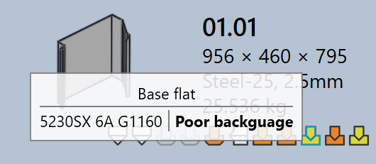

Werkzeugstatus
In TruSmartCAM zeigt jede Teilekachel visuell den Werkzeugstatus dieses Teils für alle verfügbaren Maschinen an. Dies hilft Benutzern, schnell zu erkennen, für welche Maschinen ein Teil bestückt ist und ob die Werkzeugbestückung fertig ist, überprüft werden muss oder fehlt.
-
Der Werkzeugstatus wird direkt auf der Teilekachel mithilfe von Symbolen und Farbindikatoren angezeigt.
-
Jedes Symbol repräsentiert eine Maschinentechnologie (z. B. Stanzen, Laser).
-
Die Farbe des Symbols zeigt den aktuellen Werkzeugstatus für diese Maschine an.
Die nachfolgende Tabelle erläutert die Bedeutung der einzelnen Symbole und Farben und hilft Benutzern, den Werkzeugstatus korrekt zu interpretieren.

| Maschinensymbol | Beschreibung |
|---|---|
|
Laserschneidmaschine |
Stanzmaschine |
|
|
Abkantpresse |
|
Schwenkbiegemaschine |
| Werkzeugstatus | Beschreibung |
|---|---|
|
Werkzeugbestückung ist in Ordnung |
|
Werkzeugbestückung hat Warnungen |
|
Werkzeugbestückung hat Fehler |
|
Werkzeugbestückung nicht verfügbar |
Werkzeugfehler
Ein CAM-Fehler (Computer-Aided Manufacturing) tritt während der Werkzeugbestückungs- oder Fertigungsvorbereitungsphase auf. Diese Fehler entstehen durch Probleme wie Werkzeugkollisionen, fehlende Werkzeugbestückung oder ungültige Schneidbedingungen.
Biegewerkzeugfehler
-
Kollisionen erkannt und Greiferfehler : Die Biegeeinrichtung verursacht Werkzeug- oder Greiferkollisionen während der Simulation.


-
Überlastfehler und Enge Schenkel oder Loch zu nah : Die Biegewerkzeuge sind überlastet, oder Bohrungen befinden sich zu nahe an der Biegelinie, was das Teil oder die Werkzeuge beschädigen kann.


-
Muss überprüft werden und Kurzer Stempel-Matrizen-Abstand : Die Werkzeugeinrichtung muss manuell überprüft werden, oder die ausgewählte Gesenk-/Stempelspanne ist kleiner als für das Teil erforderlich.


-
Keine Lösung gefunden, Schlechter Hinteranschlag oder Part too big for this machine : Erforderliche Biegewerkzeuge sind nicht verfügbar, der Hinteranschlag ist nicht ordnungsgemäß konfiguriert oder das Teil ist zu groß für die ausgewählte Maschine.


Schneidwerkzeugfehler
-
Fehlende Schneidebedingung : Die Schneidbedingung ist für das Rohmaterial nicht zugeordnet, daher kann das Schneiden nicht durchgeführt werden.

-
Unbearbeitete oder teilweise bearbeitete Konturen : Some shapes or edges are missed or only partly covered during the tooling process, making the part incomplete for cutting.